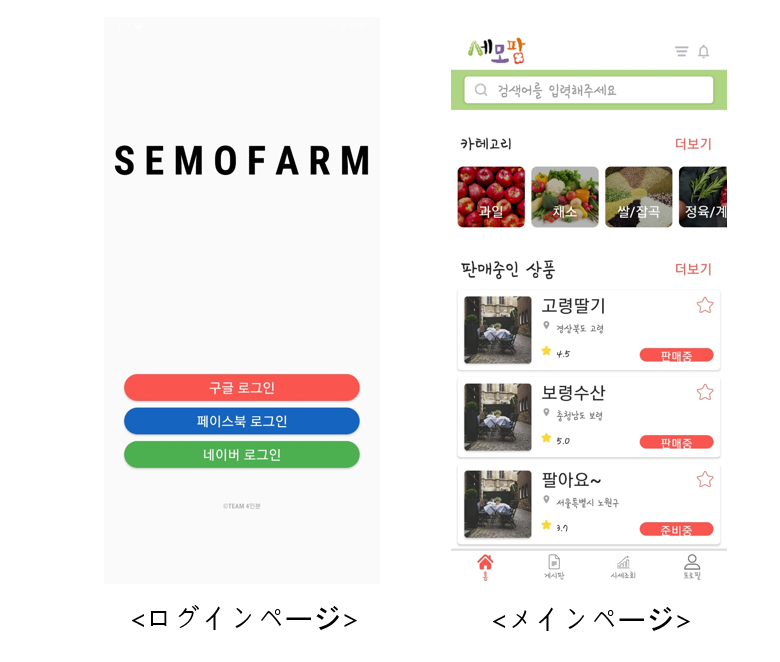
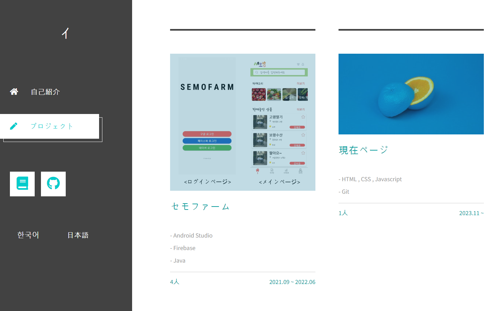

Featured
セモファーム
農産物取引のためのアプリケーションで、フロントエンド実装と画面構成を担当しました。
Android Studio
Firebase
Java
4人チーム
詳細を見る
Projects
チームプロジェクトと個人制作を中心に整理しています。重要なプロジェクトを先に見せつつ、 今後の追加もしやすい構成にしています。

Featured
農産物取引のためのアプリケーションで、フロントエンド実装と画面構成を担当しました。

Personal
HTML、CSS、JavaScript で制作した個人ポートフォリオページです。
Next
新しいプロジェクトは同じフォーマットでこのセクションに追加できます。
Next
説明、技術スタック、期間、担当内容を整理して追加できるよう枠を確保しています。